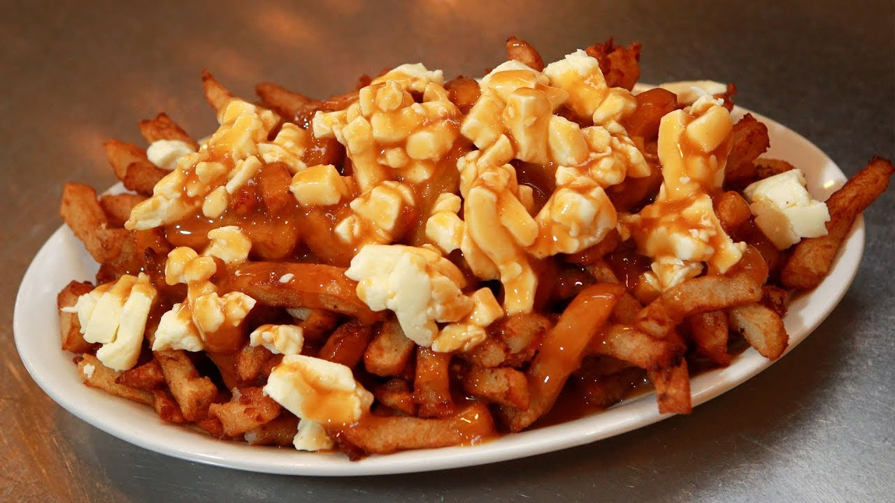

La patate sert entre autre à faire de la vodka, une boisson
très populaire en Russie.
Elle peut aussi servir à faire du pâté chinois, un plat d'origine canadienne très populaire en Amérique du Nord.
Les patates, c'est aussi bon dans la poutine! Un plat dont l'élément principal est la patate! 
Avec les patates douces, il est aussi possible de faire une boisson de patate douce!